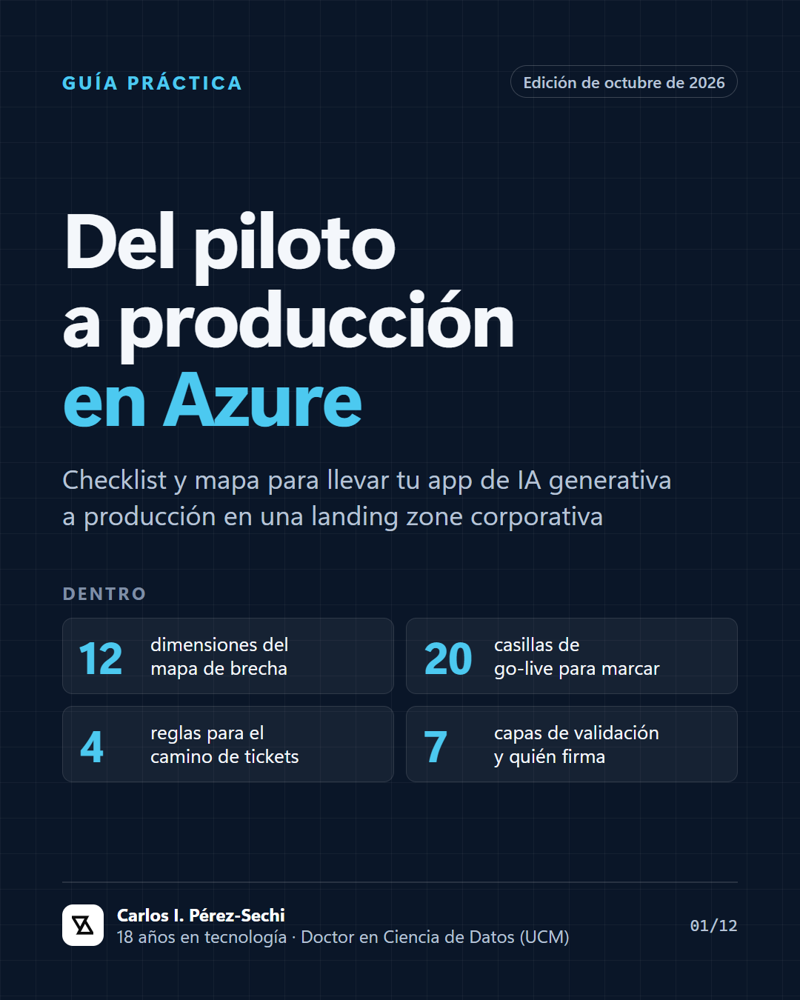

October 2026 · 12 pages · Spanish
Del piloto a producción en Azure
A practical guide and checklist for taking a generative AI app from pilot to production in a corporate Azure landing zone: the three phases and what to promise in each, a 12-dimension gap map, 20 go-live checks, cost by design, measurable quality, what to bring to security and the steering committee, and AI Act Article 50 by role.